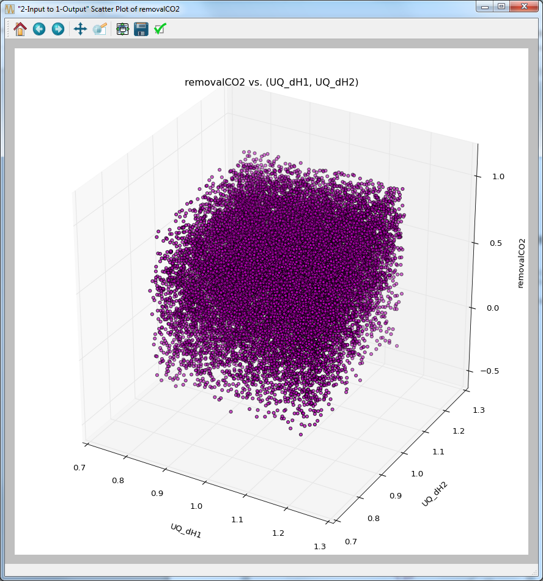

Single-Output Analysis¶
From the Single-Output Analysis Screen, the user can perform analyses that are specific to a particular output of interest. Here, the “removalCO2” output parameter is discussed.
Parameter Selection¶
For simulation models that have a large number of input parameters, it is common practice to down-select to a smaller subset of the most important input parameters that are most relevant to the output of interest. This is done so subsequent detailed studies can be performed more efficiently. By using a smaller set of inputs, a smaller set of samples may be needed.
From the UQ window, load the file “gmoat5012_9levels.filtered” in examplesUQ. (This file contains the same set of samples that resulted from data filtering. They are included here to make each demo self-inclusive.)
Click Analysis. A new page is displayed (Figure [fig:uqt_analysis_param]).

Analysis Dialog, Parameter Selection
[fig:uqt_analysis_param]
Under the Qualitative Parameter Selection section, select “removalCO2” as the output.
Select “MOAT” as the method to be used.
Click Compute input importance. A graph should appear with the results (Figure [fig:uqt_param_results]).
Parameter Selection Results
[fig:uqt_param_results]
The bars in the plot represent the importance of a particular input in determining the value of the output. For example, the values of dH3 and dS3 are very important in determining the value of removalCO2, whereas Hce and hp have no affect (the y-axis displays the average changes in the model output as a result of changing the inputs in their respective ranges. For example, from Figure [fig:uqt_param_results], changing dH2 in its range results in an average change in CO\(_2\) removal as much as about 57 percent with a margin of +/- 3 percent). Thus, it would be safe to exclude any inputs that have negligible bar lengths from analysis. Next, down-select the ten most important inputs based on these results. See Section [subsubsec:uqt_vardel] for details. Change the number of samples and scheme as desired and then generate new samples. Click Launch to run these samples to obtain another simulation ensemble that can be analyzed.
Ensemble Data Analysis¶
If the user is interested in the output uncertainty of “removalCO2” based on the uncertainties from the ten most important input parameters, perform uncertainty analysis, which would compute the probability distribution and sample statistics of “removalCO2.”
Load “lptau20k_10inputs_4outputs.filtered” from the examples\ UQ folder. Assume this is the file that the user would receive after running the cloned simulation ensemble in which the user has down-selected the ten most important inputs, set the Sampling Scheme to “Quasi-Monte Carlo (LPTAU)”, set the sample size to 20K, and performed data filtering to retain only the samples with the status output equal to “0.”
Click Analyze. A new page displays (Figure[fig:uqt_analysis_ua]).
Select “Ensemble Data” to indicate that analysis is to be directly performed on the raw sample data.
Select “removalCO2” as the output variable to analyze.
Select “Uncertainty Analysis” and then click Analyze.

Analysis Dialog, Ensemble Data Uncertainty Analysis
[fig:uqt_analysis_ua]
Once uncertainty analysis is complete, results display (Figure [fig:uqt_ua_results]) illustrating the probability distribution function (PDF), cumulative distribution function (CDF), and the sufficient statistics (e.g., mean, standard deviation) of “removalCO2” (top left corner of the PDF plot). This is used to evaluate if the output uncertainty is acceptable. If the output uncertainty is too great or the user prefers the system to operate within a higher percentage of capture, pursue further analyses to understand the relationships between the inputs and outputs, and investigate what can be done to reduce the output uncertainties by reducing the input uncertainties.
Ensemble Data Uncertainty Analysis Results
[fig:uqt_ua_results]
Next, the user may apply variance-based sensitivity analysis to quantify each input’s contribution to the output variance:
From the bottom of the “Analysis” section, select “Sensitivity Analysis.”
There are three options for sensitivity analysis: (1) first-order, (2) second-order, and (3) total-order. First-order analysis examines the effect of varying an input parameter alone. Second-order analysis examines the effect of varying pairs of input parameters. Total-order analysis examines all interactions’ effect of varying an input parameter alone and as a combination with any other input parameters. For this demonstration, select “Total-order” and click Analyze. The total sensitivity indices display in a graph. Note: If the simulation ensemble has more than ten inputs, “Total-order” is disabled (since any reasonable sample size is not sufficient). Additionally, since quantitative sensitivity analysis in general requires large ensembles with many samples (thousands or more), ensemble sensitivity analysis (without the use of response surfaces) is often less practical and accurate than response surface based analyses. The result is illustrated in Figure[fig:uqt_sa_results].
Ensemble Data Total-order Sensitivity Analysis Results
[fig:uqt_sa_results]
These results confirm that “removalCO2” is more sensitive to “dH3” and “dS3” than other inputs. (The y-axis displays an approximate percentage of output variance attributed to each individual parameter. Since total sensitivity includes higher order interaction terms with other parameters, the sum of these total sensitivity indices usually exceeds 1.)
Ensemble Data Visualization¶
In this release, ensemble data visualization is only available in “Expert” mode. At the top of the “Analyze” page, toggle the bar to expert mode and select “removalCO2” as the output. Next, to “Visualize Data,” choose an input (e.g., “UQ_dH1”) and click Visualize for a 2-D scatter plot of “removalCO2” versus that input (Figure [fig:uqt_splot1_results]).
Ensemble Data Visualization of One Input
[fig:uqt_splot1_results]
Next, select a second input (e.g., “UQ_dH2”) and click Visualize for a 3-D scatter plot of “removalCO2” versus the two inputs. (Note: The input selections must be unique for the Visualize button to be enabled.) Figure [fig:uqt_splot2_results] shows the results.
Ensemble Data Visualization of Two Inputs
[fig:uqt_splot2_results]
The plot in Figure [fig:uqt_splot2_results] can be rotated by clicking and dragging.